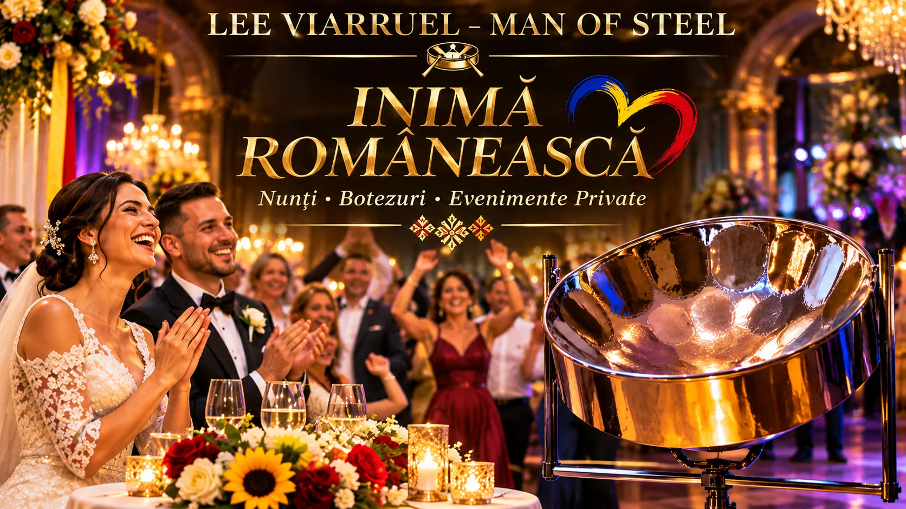

01 / HOSPITALITY
HOTELS & LOUNGES
Refined live ambience for hotel lobbies, restaurants, terraces and luxury hospitality spaces.

THE ART OF LIVE STEELPAN ENTERTAINMENT.
Sophisticated live music for memorable spaces and exceptional occasions.
Modern, expressive tenor steelpan arrangements spanning jazz, soul, lounge classics, romantic favourites and recognizable contemporary songs. Warm Caribbean musicianship with an elegant, international presentation.
Refined live ambience for hotel lobbies, restaurants, terraces and luxury hospitality spaces.
Atmospheric steelpan for cocktail hours, receptions, romantic dinners and private celebrations.
Distinctive musical entertainment for receptions, networking evenings and curated occasions.
Caribbean soul. Latin rhythm. International elegance. LEE VIARRUEL — MAN OF STEEL brings sophisticated solo tenor steelpan entertainment to hotels, restaurants, weddings, christenings, corporate functions and private celebrations across Romania.
The selections below are a planned performance repertoire, currently in preparation. Each 45-minute programme features a tailored selection of arranged numbers with room for welcome, transitions and a finale. Programme selections and availability are confirmed when booking.
International Dinner & Lounge
Smooth, expressive tenor steelpan interpretations of timeless international melodies. An elegant atmosphere for hotel lounges, fine dining, cocktail receptions and weddings.
IDEAL FOR: Hotels · Restaurants · Cocktail Receptions · Wedding Dinners
Modern International & Romanian Lounge
Contemporary pop favourites and Romanian melodies performed on warm, melodic tenor steelpan. A refined bridge from welcome drinks to evening entertainment.
IDEAL FOR: Winter Hotel Evenings · Dining · Corporate Receptions
Corporate, Party & Christmas Edition
Upbeat international classics with a steelpan twist, tailored for company parties, birthdays, festive receptions and seasonal hotel events.
IDEAL FOR: Corporate Parties · Private Events · Christmas & New Year's Celebrations

Nunți · Botezuri · Evenimente Private
Romanian romantic favourites, party melodies and traditional dance selections arranged for Trinidadian tenor steelpan — a memorable crossover for weddings, baptisms and family celebrations.
IDEAL FOR: Nunți · Botezuri · Petreceri de Familie · Recepții

Summer · Poolside · Beach Clubs & Resorts
A sun-drenched journey through Caribbean melodies, reggae, Latin party favourites and international summer hits. Familiar feel-good songs delivered with the unmistakable sound of live tenor steelpan.
IDEAL FOR: Pool Parties · Summer Terraces · Beach Clubs · Resorts · Outdoor Receptions
Images are from the MOȘ / G//BMN cover collection and illustrate the brand; they are not photographs of these newly proposed shows. Arrangements and timings are subject to rehearsal. Public-performance and backing-track licensing requirements are handled with the event organiser.
Listen to real live performance archives from the original Gorilla Boomin website. Select an album, play the full recording or jump directly to a favourite song. These are historical live recordings, not new Man of Steel studio releases.
Archive recordings document past live performances. Repertoire and arrangements for individual bookings can be discussed when enquiring.

Original archive artwork and music from the earlier website.
Original archive artwork. New Man of Steel venue photography and a performance showreel can be added when ready.
For availability and a tailored performance enquiry, send your event date, location, occasion and approximate performance duration. Please mention “Man of Steel”.
Genuine steelpan performance photographs and new venue-style presentation concepts. Concept imagery is not presented as a booked or completed event.
/assets/new-2026//03_man_of_steel/01.webp)
/assets/new-2026//03_man_of_steel/03.webp)
/assets/new-2026//03_man_of_steel/04.webp)
/assets/new-2026//03_man_of_steel/08.webp)
/assets/new-2026//03_man_of_steel/09.webp)
/assets/new-2026//03_man_of_steel/10.webp)